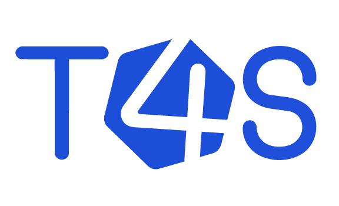
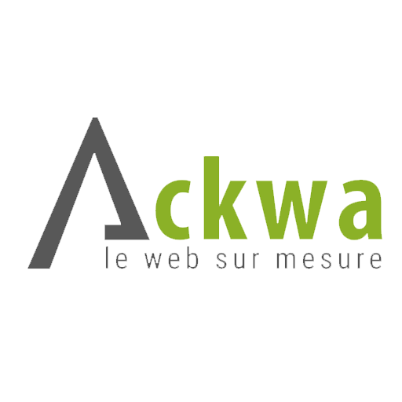
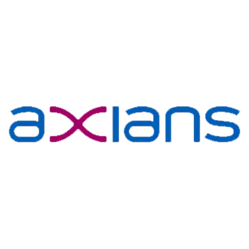
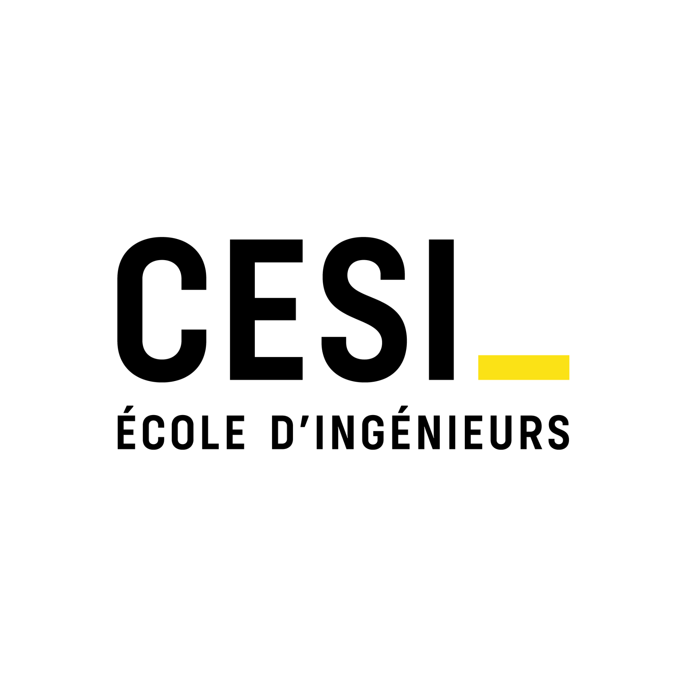

Ingénieur informatique fraîchement diplômé du CESI, avec 6 mois d'expérience comme Product Owner dans une startup HR Tech en forte croissance. J'y ai piloté en autonomie le cycle de développement produit et arbitré les priorités entre équipes technique et métiers. Ma double compétence, technique et fonctionnelle, me permet de faire le lien entre besoins utilisateurs et objectifs business.
Une double lecture, technique et fonctionnelle, pour transformer un besoin flou en spécification actionnable.
Des compétences transversales développées au fil de mes stages et de mes projets, en école et en startup.
Six mois en autonomie forte comme Product Owner, précédés de stages techniques qui nourrissent ma vision produit.

Startup HR Tech (~22 collaborateurs, 200+ clients) éditrice d'une solution hybride ATS + CRM boostée à l'IA. Autonomie rapide suite au départ de la Product Owner titulaire, en lien direct avec le COO.
Mise en place d'un mini-lab d'accès sécurisé au Darknet et exploration qualitative des contenus. Implémentation de techniques de web scraping, nettoyage et analyse des données collectées.

Recueil des besoins internes et priorisation des fonctionnalités pour un dashboard de visualisation des coûts du parc cloud OVH, avec indicateurs d'optimisation automatiques.

Déploiement d'un parc de switchs Aruba en milieu hospitalier et étude de configuration d'une borne Wi-Fi. Migration de domaine et d'utilisateurs Active Directory.

Spécialisation en développement web avancé, management d'équipe et de projet, cybersécurité et Big Data.
Développement web, réseaux & administration des systèmes, programmation orientée objet.
Baptiste s'est particulièrement distingué par sa capacité à structurer les feedbacks utilisateurs et à maintenir une roadmap claire et pertinente. Doté d'une forte culture technique et d'un véritable esprit d'initiative, il ne s'est pas contenté d'exécuter mais a été une réelle force de proposition. Je le recommande chaleureusement en tant que Product Owner ou Product Manager.Lire la lettre complète →
Disponible immédiatement pour un poste de Product Owner ou Chef de Projet, en France ou à l'international.